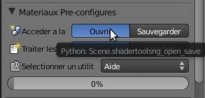
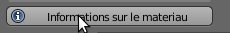
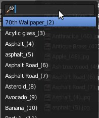
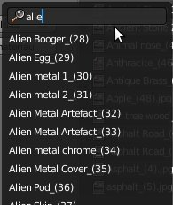
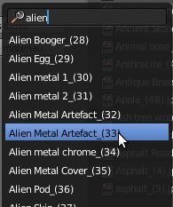
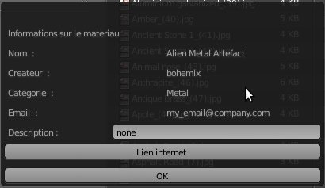
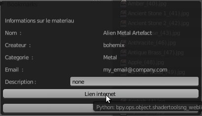
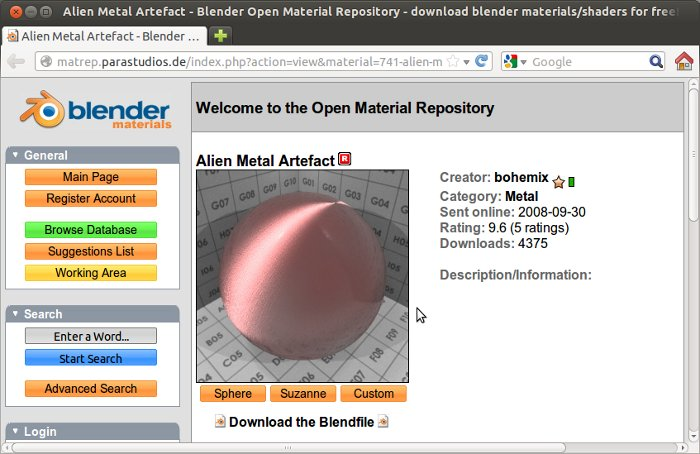

| Le Module Informations : |
| Vous trouverez ce module dans le module 'Ouvrir...'. |
|  |
| Cliquez sur le bouton 'Informations' dans le panneau à gauche de cette nouvelle fenêtre : |
|  |
| Une liste de recherche s'affiche vous permettant ainsi de rechercher le nom (ou le numéro) du matériau dont vous voulez obtenir les informations : |
|  |
| Saisissez le(s) mot(s) clé(s) : |
|  |
| Sélectionnez le matériau dans la liste de recherche comme ci-dessous : |
|  |
| Une nouvelle fenêtre apparaît vous indiquant les informations relatives au matériau : |
|  |
| Suivant le matériau vous pouvez accéder à la page internet de l'auteur ou du site ayant mit à disposition le fichier source en cliquant sur le bouton 'Lien internet' : |
|  |
| Un page web devrait s'ouvrir (si une adresse a été mentionnée par l'auteur), comme ici : |
|  |